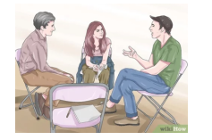
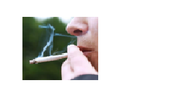
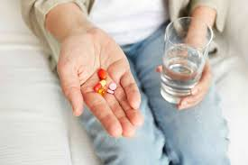

INGLES
InglesI.E.D.E.M. ASIGNATURA: INGLES DOCENTE: RAUL CAÑAS
INSTRUCCIONES GENERALES
1. DESCARGUE EL DOCUMENTO Y CONSERVELO EN FORMATO DE WORD PARA SOLUCIONARLO.
2. LEA ATENTAMENTE LAS INSTRUCCIONES DE CADA UNA DE LAS ACTIVIDADES PARA RESOLVER APROPIADAMENTE.
3. RESUELVA EL TALLER EN ESTE MISMO DOCUMENTO AGREGANDO LAS PAGINAS QUE SEAN NECESARIAS PARA SU SOLUCION.
4. AL TERMINAR DE RESOLVER, PUBLICARLO EN SU PAGINA WEB PARA SU RESPECTIVA EVALUACION.
5. FECHA FINAL DE ENTREGA: AGOSTO 4
ACTIVIDAD 1: LEE Y TRADUCE CADA UNO DE LOS PARRAFOS QUE SE DAN EN LA LECTURA A CONTINUACION.
Trastornos de la alimentación
Los trastornos alimentarios son tan comunes en Estados Unidos que 1 o 2 de cada 100 estudiantes sufrirán Luchar con uno. Los tipos más comunes de trastorno alimentario son la anorexia nerviosa y bulimia nerviosa (generalmente llamada simplemente “anorexia” y “bulimia”: pero otras enfermedades relacionadas con los alimentos trastornos, como los trastornos por atracón, los trastornos de la imagen corporal y las fobias a la comida, son apareciendo con más frecuencia que antes.
ANOREXIA
Las personas con anorexia tienen un miedo extremo a ganar peso y una visión distorsionada de su Tamaño y forma del cuerpo. Como resultado, no pueden mantener un peso corporal normal. Algunas personas con anorexia restringen su ingesta de alimentos mediante dietas o ejercicio excesivo. Casi no comen nada y la pequeña cantidad de comida que comen se convierte en una obsesión. Otras personas con trastornos alimentarios hacen algo llamado atracones y purgas, donde Comen mucha comida y luego intentan deshacerse de las calorías obligándose a vomitar. Usar laxantes o hacer ejercicio excesivo.
BULIMIA
La bulimia es similar a la anorexia. Con bulimia, una persona come compulsivamente (come demasiada comida) y luego intenta compensarlo de formas extremas, como vómitos forzados o exceso ejercicio, para prevenir el aumento de peso. Con el tiempo, estos pasos pueden resultar peligrosos. Ser diagnosticada con bulimia, una persona debe darse atracones y purgarse regularmente, al menos dos veces a la semana durante un par de meses. Las personas con bulimia comen una gran cantidad de comida (a menudo comida chatarra).comida) a la vez, generalmente en secreto. La persona normalmente se siente impotente para dejar de comer y sólo puede parar cuando esté demasiado lleno para comer más. Kidshealth.org (abreviado)
ACTIVIDAD 2: BUSCA UNA IMAGEN QUE PUEDA IDENTIFICAR CADA UNO DE LOS PARRAFOS DE LA LECTURA ANTERIOR Y AGREGALO EN LA SOLUCIÒN DEL TRABAJO PROPUESTO
Trastornos de la alimentación

Anorexia

Bulimia

ACTIVIDAD 3: RESUELVE EL CUESTIONARIO QUE SE DA A CONTINUACIÓN A PARTIR DE LA LECTURA.
A- Lee el texto y decide si estas oraciones son con verdadero (V) o falso (F). Corrige las falsas.
1. Un gran número de estudiantes estadounidenses sufrirán trastornos alimentarios. __V__
2. La anorexia y la bulimia son los únicos trastornos relacionados con la alimentación. _F____
3. A las anoréxicas les gusta su cuerpo. __F____
4. Algunas anoréxicas comen muy poco y hacen demasiado ejercicio. ____V__
5. Algunas bulímicas intentan perder calorías haciendo ejercicio con regularidad. __V____
B- Responde las siguientes preguntas con frases completas.
1. ¿Cuáles son los síntomas de la bulimia?
Síntomas de la bulimia
Repetir episodios de ingerir cantidades excesivas de alimentos en una única vez
Durante el atracón, la persona tendrá una pérdida de control, sin poder dejar de comer o sin ser capaz de controlarlo
Tras un atracón, forzar el vómito
Hacer ejercicio excesivo para no aumentar el peso
Utilizar laxantes, diuréticos después de comer
Ayunar
2. ¿Cuándo podemos decir que una persona sufre bulimia?
La presencia de atracones: conocidos como episodios de ingestas excesivas y rápidas de comida y que se encuentran asociadas a una sensación de falta de control.
Presencia de conductas compensatorias: conductas como el vómito inducido, el uso de laxantes y diuréticos, restricciones alimentarias o la hiperactividad física, que se realizan con el objetivo de intentar compensar los efectos de la sobre ingesta. (*La presencia de ambos ocurren de promedio al menos, una vez a la semana durante tres meses).
Autoimagen negativa: sentimientos de gran insatisfacción con la imagen corporal, distorsión del peso y el volumen del cuerpo, que hacen que se muestre una gran preocupación por el peso y figura.
3. ¿Por qué las bulímicas comen tanto?
Las personas con bulimia comen una cantidad mayor de comida de lo que comería la mayoría de las personas en una situación similar, en un breve período de tiempo (atracón). Entonces, para evitar subir de peso, hacen algo por eliminar la comida que ingirieron (se purgan), vomitar
ACTIVIDAD 4: COMPLETA EL SIGUIENTE CUADRO CON LA INFORMACIÒN QUE SE PIDE: ESCRIBE EN CADA CASO TRES SUGERENCIAS APLICANDO LAS EXPRESIONES: DEBE – NO DEBE / ¿QUÉ TAL…? / ¿POR QUÉ NO…? PARACA
EXPRESAR LA POSIBLE SOLUCIÒN A CADA UNA DE ESTAS SITUACIONES DE SALUD.
UTILIZA VOCABULARIO Y EXPRESIONES ESTUDIADAS Y TRABAJADAS EN CLASE
TRASTORNOS DE LA ALIMENTACIÓN
Por qué no hablamos un poco de cómo te sientes últimamente con respecto a la comida y tu cuerpo? No debes sentirte solo/a en esto; hay muchas personas que entienden lo que estás pasando y pueden apoyarte. Qué tal si vamos a dar un paseo y hablamos sobre cómo te has estado sintiendo últimamente?
ANOREXIA
Por qué no considerar buscar ayuda profesional si sientes que tu relación con la comida no es saludable. Hablar con un psicólogo o nutricionista puede ser un buen primer paso. Debes recordar que una alimentación balanceada es esencial para mantener tu cuerpo y mente sanos. Comer una variedad de alimentos te proporciona los nutrientes necesarios. Qué tal si vamos a un lugar donde podamos disfrutar de una comida nutritiva y equilibrada. Podemos probar nuevos sabores y disfrutar de la compañía.
BULIMIA
Por qué no hablamos con un profesional que pueda ayudarte a sentirte mejor? No debes sentirte avergonzado/a por buscar ayuda; es un acto valiente. ¿Qué tal si vamos a buscar información juntos/as sobre cómo mejorar tu bienestar?
ACTIVIDAD 5: ELABORAR UNA LISTA DE 12 HABITOS SALUDABLES Y NO SALUDABLES CON SU RESPECTIVA IMAGEN.
LUEGO ESCRIBE PARA CADA UNO UNA SUGERENCIA APLICANDO LAS EXPRESIONES: DEBE – DEBE NO / CÓMO
ACERCA DE…? / ¿POR QUÉ NO? SIGUE EL EJEMPLO:
Hábitos Saludables
Alimentación equilibrada

2.Hidratación adecuada

Ejercicio regular

4 .Dormir bien

5 .Practicar la meditación o el mindfulness

6 .Evitar el consumo de alcohol y tabaco

7 .Mantener una buena higiene personal

8 .Controlar el tiempo frente a las pantallas

9. Realizar chequeo médicos regulares

10.Socializar

11 .Practicar actividades creativas

12 .Manejo del tiempo

Hábitos No Saludables
1.Consumo excesivo de alimentos procesados y azúcares

2 .Sedentarismo

3 .Privación del sueño

4 .Consumo de alcohol en exceso

5 .Fumar
6 .Saltarse comidas

7 .Comer en exceso

8 .Abuso de cafeína

9 .Mala postura

10 .Automedicación

11 .Uso excesivo de dispositivos electrónicos

12 .Negación de problemas de salud mental

Hábitos Saludables
1.Alimentación equilibrada
Debe: Incluir una variedad de alimentos en cada comida para asegurarse de obtener todos los nutrientes necesarios.
Debe no: Excluir grupos de alimentos importantes sin la guía de un nutricionista.
¿Por qué no? ¿Por qué no pruebas nuevas recetas saludables para hacer la alimentación más interesante?
2.Hidratación adecuada
oDebe: Beber agua regularmente durante el día.
oDebe no: Sustituir el agua por bebidas azucaradas.
o¿Cómo acerca de...? ¿Cómo acerca de llevar una botella de agua contigo para mantenerte hidratado?
3.Ejercicio regular
Debe: Realizar actividades físicas que disfrutes, como caminar, nadar o bailar.
Debe no: Forzarte a hacer ejercicios que no te gustan, ya que puede llevar a la desmotivación.
¿Por qué no? ¿Por qué no pruebas una nueva clase de fitness para variar tu rutina?
4.Dormir bien
Debe: Mantener una rutina de sueño regular, acostándose y levantándose a la misma hora todos los días.
Debe no: Usar dispositivos electrónicos justo antes de dormir.
¿Cómo acerca de...? ¿Cómo acerca de establecer una rutina de relajación antes de acostarte?
5.Practicar la meditación o el mindfulness
oDebe: Dedicar unos minutos cada día a la meditación para reducir el estrés.
oDebe no: Ignorar las señales de estrés o ansiedad.
o¿Por qué no? ¿Por qué no pruebas una aplicación de meditación guiada?
6.Evitar el consumo de alcohol y tabaco
Debe: Buscar alternativas saludables, como bebidas sin alcohol y actividades físicas.
Debe no: Ceder a la presión social para consumir estas sustancias.
¿Cómo acerca de...? ¿Cómo acerca de probar bebidas sin alcohol en la próxima salida social?
7.Mantener una buena higiene personal
Debe: Practicar una higiene adecuada, incluyendo el lavado de manos y el cepillado de dientes.
Debe no: Descuidar la higiene, especialmente en tiempos de enfermedad.
¿Por qué no? ¿Por qué no estableces un recordatorio para cambiar tu cepillo de dientes regularmente?
.Controlar el tiempo frente a las pantallas
Debe: Limitar el tiempo frente a dispositivos electrónicos y hacer pausas regulares.
Debe no: Pasar horas seguidas frente a la pantalla sin descansos.
¿Cómo acerca de...? ¿Cómo acerca de programar momentos sin pantallas durante el día?
9.Realizar chequeos médicos regulares
Debe: Asistir a revisiones médicas periódicas para monitorear la salud.
Debe no: Ignorar síntomas o retrasar las visitas al médico.
¿Por qué no? ¿Por qué no agendar tu próxima revisión médica hoy mismo?
10.Socializar
Debe: Mantener contacto con amigos y familiares para apoyo emocional.
Debe no: Aislarse socialmente, especialmente en momentos difíciles.
¿Cómo acerca de...? ¿Cómo acerca de organizar una reunión con amigos este fin de semana?
11.Practicar actividades creativas
Debe: Dedicarse a hobbies que promuevan la creatividad, como pintar o escribir.
Debe no: Descuidar las actividades creativas por falta de tiempo.
¿Por qué no? ¿Por qué no pruebas una nueva actividad creativa este mes?
12.Manejo del tiempo
Debe: Planificar el día con antelación para reducir el estrés.
Debe no: Dejar todo para el último momento.
¿Cómo acerca de...? ¿Cómo acerca de usar una agenda para organizar tus tareas diarias?
Hábitos No Saludables
1.Consumo excesivo de alimentos procesados y azúcares
Debe: Optar por opciones de alimentos frescos y naturales.
Debe no: Abusar de la comida rápida y los dulces.
¿Por qué no? ¿Por qué no intentas preparar tus propios snacks saludables?
2.Sedentarismo
Debe: Incorporar más movimiento en el día a día, como caminar o hacer estiramientos.
Debe no: Pasar largas horas sin moverse.
¿Cómo acerca de...? ¿Cómo acerca de dar un paseo después de cada comida?
3.Privación del sueño
Debe: Priorizar el sueño y establecer una rutina de descanso.
Debe no: Sacrificar el sueño por trabajo o entretenimiento.
¿Por qué no? ¿Por qué no ajustas tu horario para asegurarte de dormir lo suficiente?
4.Consumo de alcohol en exceso
Debe: Limitar la ingesta de alcohol y optar por opciones más saludables.
Debe no: Usar el alcohol como método para lidiar con el estrés.
¿Cómo acerca de...? ¿Cómo acerca de establecer un límite de consumo de alcohol por semana?
5.Fumar
Debe: Buscar ayuda para dejar de fumar, como terapias o grupos de apoyo.
Debe no: Subestimar los efectos negativos del tabaco en la salud.
¿Por qué no? ¿Por qué no consultas con un profesional para encontrar un plan para dejar de fumar?
6.Saltarse comidas
Debe: Mantener un horario regular de comidas para un metabolismo saludable.
Debe no: Saltarse comidas, especialmente el desayuno.
¿Cómo acerca de...? ¿Cómo acerca de preparar comidas fáciles y rápidas para evitar saltarte alguna?
7.Comer en exceso
Debe: Comer porciones adecuadas y equilibradas.
Debe no: Comer por ansiedad o aburrimiento.
¿Por qué no? ¿Por qué no practicas la alimentación consciente para disfrutar cada bocado?
8.Abuso de cafeína
Debe: Limitar el consumo de café y otras bebidas con cafeína.
Debe no: Beber cafeína en exceso, especialmente por la tarde.
¿Cómo acerca de...? ¿Cómo acerca de probar infusiones o tés sin cafeína?
9.Mala postura
Debe: Mantener una buena postura al sentarse y estar de pie.
Debe no: Ignorar la importancia de una postura correcta.
¿Por qué no? ¿Por qué no intentas ejercicios de estiramiento para mejorar tu postura?
10.Automedicación
Debe: Consultar siempre a un médico antes de tomar medicamentos.
Debe no: Tomar medicamentos sin receta o sin indicaciones médicas.
¿Cómo acerca de...? ¿Cómo acerca de llevar un registro de tus medicamentos y consultar con tu médico?
11.Uso excesivo de dispositivos electrónicos
Debe: Tomar descansos regulares para descansar la vista y la mente.
Debe no: Pasar largas horas frente a pantallas sin interrupciones.
¿Por qué no? ¿Por qué no estableces límites de tiempo para el uso de dispositivos electrónicos?
12.Negación de problemas de salud mental
Debe: Reconocer y buscar ayuda para problemas de salud mental.
Debe no: Ignorar síntomas de ansiedad o depresión.
¿Cómo acerca de...? ¿Cómo acerca de hablar con un profesional de salud mental sobre tus sentimientos?